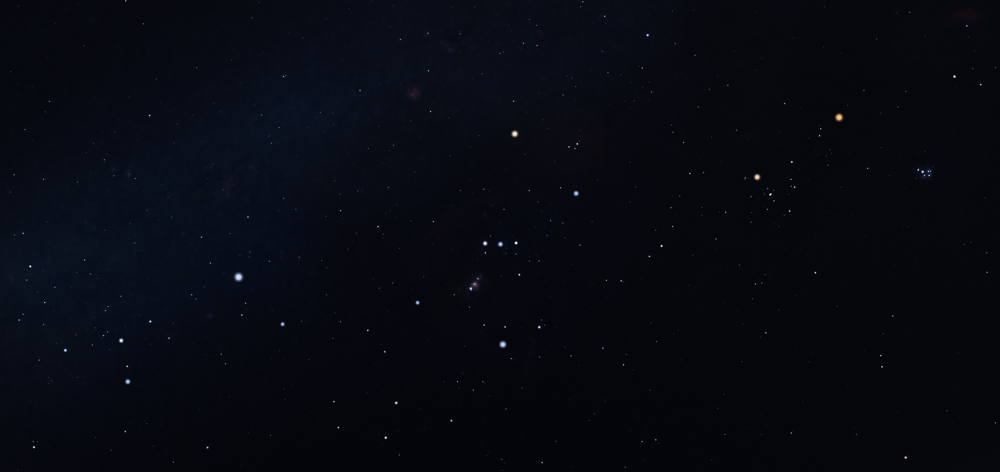

Locating the Cosmos
Jed Rembold
January 18, 2024
Announcements
- Welcome to DATA-275: Data in the Cosmos!
- Things to do:
- Access the course webpage here!
- This page is also linked from Canvas
- Read over the full syllabus
- Join the class Discord server for ease of communication and
announcements
- Invite information in an announcement on Canvas
- If you don’t already have a GitHub account, sign up for one
- Homework 1 will be posted tomorrow. Not due for two weeks.
Who Am I?
- Name
-
Jed Rembold
- Background
-
PhD in Physics with specialization in Astrophysics
- Office
-
Ford 214
- Office Hours
-
M, W 2:00 - 4:00
-
T, Th 3:00 - 4:30
-
Online or anytime my door is open
- Email
-
jjrembold at willamette.edu
Why This Course?
- The amount of data that telescopes produce is growing…astronomically
- LSST to collect 20 TB per night starting in 2024
- Square Kilometre Array will generate 10 PB compressed daily
starting in 2028
- One of the largest sky surveys currently, SDSS, has collected 40 TB
over the past 20 years
- As such, the field of astronomy is becoming a data science field
- Astrophysicists adopting data science skills
- Collaboration between astronomers and data scientists only going to
build
Deliverables and Scoring
- Standard 90/80/70 etc grade cut-offs
- Top 2% get +’s, bottom 2% get -’s
| Homework (5) |
45% |
| Checkins (15) |
5% |
| Quizzes (3) |
30% |
| Projects (1) |
20% |
Homework
- One assignment due after each unit, so approximately 1 every 2
weeks
- Assignments will be done in pairs
- Pseudo-randomly assigned (You won’t be with the same person more
than once)
- 3-4 problems per assignment
- Solutions should be written up as short computational essays, using
a Jupyter Notebook, RMarkdown, or Quarto, and exported to HTML before
being submitted
- Distribution and submission of materials managed through GitHub
Classroom
- 3 cumulative late days over the semester without penalty, then a 20%
loss of credit per 24 hours late
- Late days count against both partners, so don’t be
that person who tanks your partner’s grade because you had the
days
Check-ins and Debriefings
- A large portion of this course revolves around working with peers
who may have very different skill sets to your own
- Doing this well is difficult!
- Each week an assignment is not due, you will have
the weekend to complete a very short check-in
- Asks about what you’ve accomplished that week, and how you and your
partner have planned the upcoming week to finish the assignment
- Each week an assignment is due, you will have a
short debriefing reflection
- Reflect on what you did well as a partner, where you dropped the
ball, and how you could improve going forward
- You have the weekend to complete these. They can not use late
days.
Quizzes
- This course is a mix of science and data analysis techniques
- Quizzes are about the science
- After every 2 units, there will be a short quiz (30 min) at the end
of class
- A handful of multiple choice or short answer questions pertaining to
the scientific topics we have discussed in the previous 2 topics
- I’ll have example questions and study materials for you well before
the first quiz
Projects
- One final project at the end of the semester
- Projects will be group based, most likely of 3-4
- Projects are a chance for you to dive deeper into a topic that has
been discussed, or look to bring several topics together to look at
something that interests you
- Can also be an opportunity to introduce the class to a concept that
we haven’t discussed, if your topic of interest necessitates
- Project deliverables will be an approximately 10-12 minute
presentation to the class
Outline
- Core units this semester will focus on:
- The Solar System
- Stars
- Exoplanets
- Galaxies
- Dark Matter
- Cosmology
- Expect to spend about 4-5 classes, or about two weeks, on each
unit
- Class lectures will be a mix of background science, analysis
techniques, and interactive tutorials
- Plan to bring a laptop if possible to work on
Remain Flexible!
- This is the second time this class is being taught!
- While I try immensely hard to be good at what I do, I can not (yet)
see the future
- Things will come up that are probably non-ideal
- Timing of topics may vary unpredictably
- Execution of assignments, quizzes, or presentations may have
stumbles
- I am incredibly excited to teach this class again, and that
so many were interested in the material
- I ask in return that you be patient and forgiving if some things do
not go perfectly
- I promise to engage you and solicit feedback about any changes or
tweaks we need to make on the fly
Topics for Today
- Positions on the Sky
- What can we tell about the position of an astronomical object?
- How do we describe those positions?
- What are the common methods?
- How can we transition between those methods?
Looking to the heavens

Looks can be deceiving
- Stars (or other bright objects) may only appear to be next
to one another
- In reality, they are almost certainly separated by massive
distances
- Stars are so far away that we lose essentially all depth perception
- Comparable to looking at far away headlights on a dark road
- Looking upward, we could not tell the difference between space (as
we know it to be) and us living inside a huge dark bubble with holes
poked in it to let in light
- Embracing this analogy, we commonly refer to the Celestial
Sphere, which could be envisioned as this giant dark bubble with
holes poked in it
The Celestial Sphere
- Defined to align with Earth’s sphere:
- The celestial North pole is directly above Earth’s North pole
- The celestial South pole is directly below Earth’s South pole
- The celestial “equator” aligns with Earth’s equator
- The celestial equator does not align with the disk
of the Solar System, because Earth is tilted
- The ecliptic traces the intersection of the celestial
sphere and the disk of the Solar System, and is the path that the Sun
and planets follow through our sky
- Similar to Earth, positions on the celestial sphere are determined
with, essentially, a latitude and longitude
- Declination = latitude, Right ascension = longitude
Orientation and Vocabulary
Movement
- The further away something is from us, the more it seems to be
“locked” to the celestial sphere
- Stars are essentially motionless, with basically fixed declination
and right ascension
- Solar system objects, like planets or the Sun, slowly traverse along
the ecliptic
- The Moon follows a curve quite close to the ecliptic, but not
exactly, at a faster pace
- Objects in orbit, like satellites, do not seem fixed to the
celestial sphere at all
- The Milky Way, being comprised of stars, is fixed to the celestial
sphere
- The galactic plane lines up with neither Earth’s equator nor the
disk of the Solar System, and thus stretches across the sky at an
alternative angle
The Equatorial coordinate system
- Celestial latitude (Declination)
- Varies from -90 to +90 degrees
- High precision uses arc-minutes, where 60 arc-minute \(=60^\prime = 1^\circ\)
- Can also use arc-seconds, where 60 arc-second \(=60^{\prime\prime} = 1^\prime\)
- Thus \(15^\circ45^\prime30^{\prime\prime}
= (15 + 45/60 + 30/3600)^\circ = 115.75833^\circ\)
- Celestial longitude (Right Ascension)
- Varies from 0 to 360 degrees
- Because the celestial sphere rotates about its poles once every 24
hours, Right ascension is also commonly indicated in units of hours,
minutes, and seconds
- 1 hr = 15 degrees
- \(14h32m14s = (14 + 32/60 + 14/3600)h =
14.5372h = (14.5372 \times 15)^\circ = 218.0583^\circ\)
The Local System
- Determined by where and when you
are looking at the sky
- Still commonly uses two coordinates:
- The direction you are looking (Azimuth)
- Generally determined by something like a compass bearing
- The angle above the horizon that the object appears
(Altitude)
- Generally determined with a sextant, possible with rough hand
measurements
Other Coordinate systems
- Astronomy will frequently utilize other coordinate systems as well:
- Solar barycentric coordinates: based on the center of mass of the
Sun
- Galactic coordinates: also centered on the Sun, but with different
orientation
- Even Equatorial coordinates can vary some owing to the precession of
the Earth, and thus often specify an epoch
- All can be transformed between one another using geometry
- Not always very nice geometry: we’ll try to leverage existing
libraries to do this wherever possible
Celestial Sphere Demonstrations
- How long is the Sun up today (not that you can see it…) here on the
45th parallel?
- How long is the Sun up in Alaska (roughly on the 65th
parallel)?
- How long after sunset will the bright star Arcturus rise today in
Salem?
Plotting Coordinates Demonstration
- The file here is a CSV file
containing the names and coordinates of the brightest 200 stars
- Suppose we want to visualize this arrangement of stars to see if we
could identify any constellations
// reveal.js plugins
// Added plugins
,